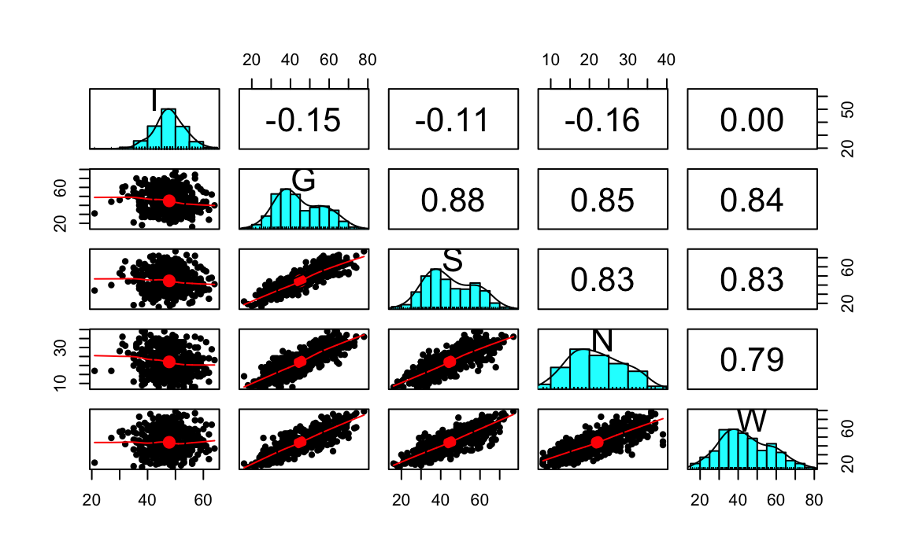

6.7 L’errore standard della misurazione e il modello fattoriale
Per concludere, prendiamo nuovamente in esame la nozione dell’errore standard della misurazione, uno dei concetti centrali della CTT, e vediamo come tale concetto possa essere "ripensato" nel contesto del modello statistico dell’analisi fattoriale. Iniziamo con una dimostrazione.
Dimostrazione. Secondo la CTT, il punteggio \(X\) ottenuto dalla somministrazione del test è uguale a \(X = T + E\), dove \(E\) è una variabile aleatorie indipendente da \(T\). Se consideriamo il rispondente \(i\)-esimo, il modello diventa \(X_i = T_i + E_i\), dove \(T_i\) è il valore vero ed \(E_i\) è una variabile aleatoria con media 0.
Riscriviamo ora questa equazione nei termini di un modello monofattoriale con \(p\) variabili manifeste (item). Per ciascun item avremo:
\[\begin{equation} \begin{aligned} Y_{1i} &= \lambda_1 \xi_i + \delta_{1i} \notag\\ Y_{2i} &= \lambda_2 \xi_i + \delta_{2i} \notag\\ \dots\notag\\ Y_{pi} &= \lambda_p \xi_i + \delta_{pi} \notag\end{aligned} \end{equation}\]
Il punteggio totale \(X_i\) per il rispondente \(i\)-esimo è dato dalla somma dei punteggi osservati in ciascun item, ovvero
\[\begin{equation} \begin{aligned} X_i &= \sum_{j=1}^p Y_{ji} = \sum_{j=1}^p \lambda_j \xi_i + \sum_{j=1}^p \delta_{ji}\notag\\[12pt] &= \left( \sum_{j=1}^p \lambda_j \right) \xi_i + \sum_{j=1}^p \delta_{ji} \notag\\[12pt] &= T_i + E_i\notag \end{aligned} \end{equation}\]
Secondo la CTT, la varianza del punteggio osservato \(X_i\) si scompone in due componenti: \(\sigma^2_{X_i} = \sigma^2_{T_i} + \sigma^2_{E_i}\). Nei termini del modello fattoriale, la varianza della componente vera del punteggio totale del test, \(\sigma^2_{T_i}\), è data dal quadrato della somma delle satutazioni fattoriali:
\[\begin{equation} \begin{aligned} \sigma^2_{T_i} &= \V\left[ \left( \sum_{j=1}^p \lambda_j \right) \xi_i \right]\notag\\ &= \left( \sum_{j=1}^p \lambda_j \right)^2 \V(\xi_i)\notag\\ &= \left( \sum_{j=1}^p \lambda_j \right)^2 \notag \end{aligned} \end{equation}\]
Nei termini del modello fattoriale, se consideriamo il punteggio totale del test, la varianza della componente dell’errore della misurazione, \(\sigma^2_{E_i}\), è data dalla somma delle unicità:
\[\begin{equation} \begin{aligned} \sigma^2_{E_i} &= \V\left( \sum_{j=1}^p \delta_{ji} \right)\notag\\ &= \sum_{j=1}^p \V\left( \delta_{ji} \right)\notag\\ &= \sum_{j=1}^p \Psi_j\notag \end{aligned} \end{equation}\]
Nei termini del modello fattoriale, dunque, una stima dell’errore standard della misurazione del punteggio totale del test è data dalla radice quadrata della quantità precedente, ovvero:
\[\begin{equation} \sigma_{E} = \sqrt{\sum_{j=1}^p \Psi_j} \tag{6.1} \end{equation}\]
6.7.1 Un caso concreto
Applichiamo ora il risultato precedente ad un caso concreto. Consideriamo i dati utilizzati nella validazione italiana del Cognitive Style Questionnaire - Short Form (CSQ-SF, Meins et al. 2012). Il CSQ-SF viene utilizzato per misurare la vulnerabilità all’ansia e alla depressione. È costituito da cinque sottoscale: Internality, Globality, Stability, Negative consequences e Self-worth.
Leggiamo i dati in \(\textsf{R}\):
csq <- rio::import(here::here("data", "csq540.csv"))Il numero di partecipanti è
n <- nrow(csq)
n
#> [1] 540Le statistiche descrittive si ottengono con la seguente istruzione:
psych::describe(csq, type = 2)
#> vars n mean sd median trimmed mad min max range skew kurtosis se
#> I 1 540 47.76 5.78 48 47.87 4.45 21 64 43 -0.31 1.07 0.25
#> G 2 540 45.00 11.94 42 44.55 11.86 16 78 62 0.34 -0.70 0.51
#> S 3 540 44.60 12.18 42 44.24 13.34 16 77 61 0.27 -0.77 0.52
#> N 4 540 22.01 6.92 21 21.86 7.41 8 39 31 0.21 -0.74 0.30
#> W 5 540 44.05 13.10 43 43.66 13.34 16 79 63 0.31 -0.53 0.56Esaminiamo la matrice di correlazione:
psych::pairs.panels(csq)
Specifichiamo il modello unifattoriale nella sintassi di lavaan:
mod_csq <- "
F =~ NA*I + G + S + N + W
F ~~ 1*F
"Adattiamo il modello ai dati:
fit <- lavaan:::cfa(
mod_csq,
data = csq
)Esaminiamo i risultati:
summary(
fit,
standardized = TRUE,
fit.measures = TRUE
)
#> lavaan 0.6-10 ended normally after 26 iterations
#>
#> Estimator ML
#> Optimization method NLMINB
#> Number of model parameters 10
#>
#> Number of observations 540
#>
#> Model Test User Model:
#>
#> Test statistic 46.716
#> Degrees of freedom 5
#> P-value (Chi-square) 0.000
#>
#> Model Test Baseline Model:
#>
#> Test statistic 2361.816
#> Degrees of freedom 10
#> P-value 0.000
#>
#> User Model versus Baseline Model:
#>
#> Comparative Fit Index (CFI) 0.982
#> Tucker-Lewis Index (TLI) 0.965
#>
#> Loglikelihood and Information Criteria:
#>
#> Loglikelihood user model (H0) -8741.781
#> Loglikelihood unrestricted model (H1) -8718.423
#>
#> Akaike (AIC) 17503.562
#> Bayesian (BIC) 17546.478
#> Sample-size adjusted Bayesian (BIC) 17514.734
#>
#> Root Mean Square Error of Approximation:
#>
#> RMSEA 0.124
#> 90 Percent confidence interval - lower 0.093
#> 90 Percent confidence interval - upper 0.158
#> P-value RMSEA <= 0.05 0.000
#>
#> Standardized Root Mean Square Residual:
#>
#> SRMR 0.033
#>
#> Parameter Estimates:
#>
#> Standard errors Standard
#> Information Expected
#> Information saturated (h1) model Structured
#>
#> Latent Variables:
#> Estimate Std.Err z-value P(>|z|) Std.lv Std.all
#> F =~
#> I 0.725 0.253 2.867 0.004 0.725 0.126
#> G -11.322 0.384 -29.481 0.000 -11.322 -0.949
#> S -11.342 0.398 -28.513 0.000 -11.342 -0.932
#> N -6.163 0.233 -26.398 0.000 -6.163 -0.891
#> W -11.598 0.444 -26.137 0.000 -11.598 -0.886
#>
#> Variances:
#> Estimate Std.Err z-value P(>|z|) Std.lv Std.all
#> F 1.000 1.000 1.000
#> .I 32.840 2.000 16.420 0.000 32.840 0.984
#> .G 14.038 1.473 9.532 0.000 14.038 0.099
#> .S 19.508 1.718 11.353 0.000 19.508 0.132
#> .N 9.847 0.725 13.573 0.000 9.847 0.206
#> .W 36.892 2.685 13.737 0.000 36.892 0.215Recuperiamo le specificità:
psi <- parameterEstimates(fit)$est[7:11]
psi
#> [1] 32.839662 14.037577 19.508118 9.846929 36.891620Stimiamo l’errore standard della misurazione con la (6.1):
sqrt(sum(psi))
#> [1] 10.63597Applichiamo ora la formula della TCT:
\[ \sigma_E = \sigma_X \sqrt{1 -\rho_{XX^\prime}}. \]
Per trovare \(\sigma\) calcoliamo prima il punteggio totale:
tot_score <- rowSums(csq)La deviazione standard di tot_score ci fornisce una stima di \(\sigma\):
sigma <- sd(tot_score)
sigma
#> [1] 41.26414Per applicare la formula della TCT abbiamo bisogno dell’attendibilità. La stimiamo usando la funzione reliability del pacchetto semTools dall’oggetto creato da lavaan:::cfa():
rel <- semTools::reliability(fit)
rel
#> F
#> alpha 0.8506572
#> omega 0.9330313
#> omega2 0.9330313
#> omega3 0.9273385
#> avevar 0.7916575Utilizzando \(\Omega\) otteniamo:
sigma * sqrt(1 - rel[2])
#> [1] 10.67846